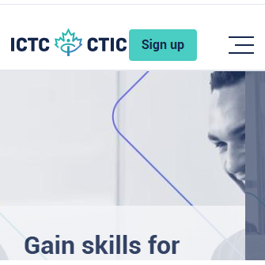

ICTC ↗

ICTC (Information and Communications Technology Council) provides training programs and career development resources in the technology sector. It offers courses, certifications, and labour market insights to help individuals build in-demand digital skills. The organization supports job readiness and career advancement in Canada's tech industry.